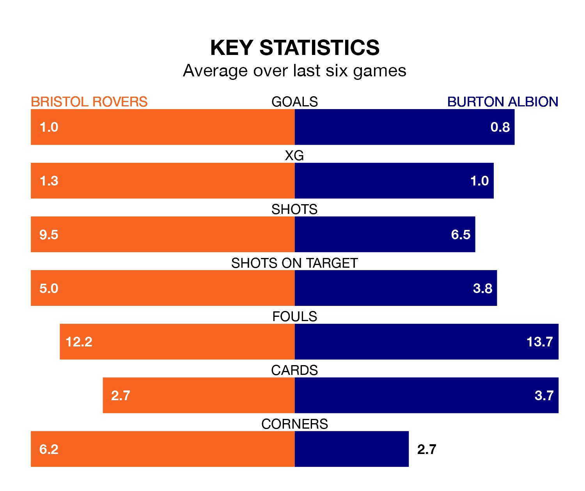

Bristol Rovers are heavy favourites to keep all three points at home in Saturday's kick-off against Burton Albion.
The Gas, who sit 11th in EFL League One with 30 games played, are priced at 1.6 to seal victory at the Memorial Stadium.
Sitting eight places and eight points behind them in the table, Burton are 5.0 to win with *Betting Company*, while the draw is at 3.5.
In the last 10 years, Rovers and Burton have played each other on eight occasions. Rovers won one of them, Burton five, and they drew twice.
On average, the Gas scored 0.9 goals and the Brewers 1.4 in those matches.
Their last meeting was on October 21, when Burton won 4-1 at home.
With 25 goals in 30 games so far this season, Burton are scoring at below the league average rate with 0.8 goals per game. And they are conceding at an average rate, letting in 39 goals at a rate of 1.3 per game.
Rovers, meanwhile, are average scorers, with 1.3 goals per game. They have conceded 1.4 goals per game.
The Gas are in disappointing form in EFL League One, with two wins and four losses from their last six games.
With a win and two draws over that period, Albion's form is slightly worse – they have taken five points from 18, compared to the home team's six.
Rovers' Aaron Collins is among the league's most creative players, racking up nine assists in 28 appearances so far this season, and holding second spot in EFL League One's assist charts.
For the Brewers, Thomas Hamer, Steve Seddon, Mark Helm and Deji Oshilaja have set up the most goals, having laid on two assists apiece to date.
Rovers' last match was on Tuesday, a 2-0 loss against Fleetwood Town.
Burton lost 1-0 against Lincoln City last time out, on February 3.
Updated: 11:18 (UTC), 08/02/24